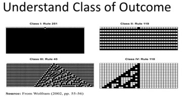

More is different. — Physics Nobel Laureate Phillip Anderson, Nobel Memorial Prize Laureate
Caution 1: 👿 BS 💩 or 💰 for real?
Whenever we hear a physicist make a big claim, but not about physics, I get skeptical and may even play the devil’s advocate 👿. Physicists are trained to be astute observers, and many are sharp thinkers.
Why isn’t he doing Physics?
How does he even know that his methods can fit in the social science/etc paradigm?
Is he making outrageous claims?
Recall two sad truths about physics:
Quantum theories frequently fail to aggregate to scales of human experience, AKA the classical limit.
There isn’t a Quantum theory of gravity that aggregates to relativistic scales1. And I never heard of other quantum theories that did.
So physicists could stick to physics and determine how Aggregation works. That said, I must admit that Phillip W. Anderson knows what he is talking about—even if I don’t like how his point is presented.
1 yet gravity is the oldest force physicists discovered.
Aggregation can capture the emergent properties of a system, which gets interesting when an emergent phenomenon diverges from the behaviors of its constituent parts. The key question is “How does more become different?”
The most prominent model for Aggregation is the Central Limit Theorem that arises from the Law of Large Numbers with the requirements that we aggregate over many similar non-interacting units with bounded effects. This leads us to easy mean and variance estimates using the empirical rule.
Next, I would use more general statistical summary functions that we call population parameters if we can track the entire system or model statistics if we can only sample from the population. There may be different levels of aggregation possible for our model. Preferences and ordered relations can be challenging to aggregate in a way that maintains transitivity. However, it is relatively easy to aggregate demand patterns.
Aggregation
Tip 1: 🥜 Aggregation in a nutshell
more is different
🔔 When small changes stack up, you are in the Central Limit Zone
Aggregation can lead to unexpected results, and we refer to this phenomenon using “more is different” in deference to (Anderson 1972).
Example 1 Can we consider a single water molecule to be wet? Not if wetness is an emergent property of multiple water molecules.3 But, the three phases of water also require aggregation. So we are dealing with problematic definitions.
3 How does wetness arise? 💭 Isn’t two water molecules sharing an H bond? Aren’t other liquids like mercury also wet? 🤔 Once we figure that we are aggregate over h-bonds, we see this isn’t a case of more is different but an ecological fallacy ❌
Example 2 Can a single neuron explain consciousness, cognition, or individual characteristics? 4 No more than a single cogwheel could explain the working of a clock.
4 what are these phenomena :thought:, how are they measured 🤔 ? An ant or a rat has brains but doesn’t exhibit consciousness, etc - so this is not just a consequence of neuron aggregation; this is another ❌.
Example 3 Schelling’s model exhibits segregation for fairly tolerant individuals and mixing for highly intolerant ones. 💰💰
Example 4 Atoms of gas have variable kinetic energy, but temperature and pressure are statistical aggregates for these, and one molecule has little bearing on the aggregate. 💰💰💰
Cellular automata show how complexity can arise from very simple rules. 5
5 This is surprising when you first learn about it 🤔, not so much afterwards. After all this is a rehash of any number of ideas - like the halting problem, inverse problems, and the axiom of choice - proving existence of arbitrary functions - without giving access to the rule. e.g., the function for all winning lottery tickets on a given day 💩 So complexity exists, but how is the game of life teaching us about aggregation?
Figure 1: Cellular Automata: A period 16 oscillator source
We considered Aggregation via the following mechanism:
Stacking small changes with the Central Limit theorem.
Using a single to aggregate behavior in the game of life.
Using a family of rules: how to aggregate using one-dimensional cellular automata models
Preferences: how to aggregate preferences, e.g., to make collective choices.
We model for the following reasons:
predict points
understand data, e.g., using a bell-shaped curve
understand patterns, e.g., the glider pattern in the game of life
understand the class of outcome, e.g., using one-dimensional cellular automata models
work through logic, e.g., difficulties arise with the aggregation of preferences.
Central limit theorem
A Probability Distribution lists a variable’s different outcomes, each with its likelihood of occurring.
The Central Limit Theorem states that if we add up a large enough series of independent variables, the distribution will follow a normal distribution characterized by a bell–shaped curve. The most likely outcome, the mean μ, is in the middle of the curve.
We can simulate this process by flipping coins a large number of times.
When we toss a fair coin two times, how many heads will we see, and at what likelihood?
Binomial distribution for two coin flips
Col1
Col2
2H
1/4
1H
1/2
0H
1/4
When you flip a coin 4 times, the outcomes
Col1
Col2
4H
1/16
3H
4/16
2H
6/16
1H
4/16
0H
1/16
And when we flip a coin N times:
For N coin flips:
P(X=k)={n \choose k} p^k(1-p)^{n-k}\qquad
\tag{1}
Success in N coin flips follows a Binomial distribution.
\mu=pN \qquad
\tag{2}
\sigma = p \times (1-p) \times n \qquad
\tag{3}
For N>>20, the Binomial distribution becomes more like the Normal distribution.
The standard deviation \sigma parameter determines how the normal distribution curve is spread. We can use these values to build confidence intervals:
The Empirical Rule
SD of Standard Normal
% of Values
\sigma
68
2\sigma
95
3\sigma
99.7
e.g., set the mean \mu to 100, and the standard deviation \sigma to 3, then for 95% of all cases, the outcome will fall in [94, 106].
In a Binomial distribution where p = 1/2 like flipping coins, \sigma = (\sqrt{N})/2, thus when N = 100, the mean is 100/2 = 50, and the standard deviation \sigma=√100/2 = 5.
In general, Binomial distributions have a standard deviation of success for N trials:
\sigma = \sqrt{(p(1-p)N)}
{eq-binom-sd}
When p = \frac{1}{2} then this simplifies to:
\sigma = \frac{\sqrt{N}}{2}
{eq-binom-sd-std}
We can now use this standard deviation to make statistical inferences. Airlines overbook to increase their profits, so they need to know the probability of someone not getting a seat. This allows them to estimate the expected cost of offering people a second ticket to take the next flight.
Example 5 (Flight Overbooking)
import mathp=0.9# show up rateseats =380# seat on planetickets =400# tickets soldmean =360# mean tickets soldsigma =round(math.sqrt(p*(1-p)*tickets))lb99 = mean -3*sigmaub99 = mean +3*sigmaprint(f'mu={mean}, sigma={sigma}, 97.5 CI = [{lb99},{ub99}]')
mu=360, sigma=6, 97.5 CI = [342,378]
A Boeing 747 has 380 seats
There is a 0.9 show-up rate,
let’s assume people show up independently of each other.
400 tickets were sold. i.e. N = 400,
The mean μ = 360
The standard deviation is \sigma = \sqrt{(0.9\times(1-0.9)\times 400)} = \sqrt{36} = 6. we can now use the Empircal rule to estimate a 99.7 confidence interval:
in 99.75% of cases, the number of passengers will be in [342, 378].
The Central Limit theorem states that stacking IID random variables drawn from any distribution possessing finite mean and variance will aggregate to normal distribution. Much of the world’s predictability stems from exceptional events never being observed. Rare events called black swans are usually products of heavy-tailed distributions that cannot be aggregated using the central limit theorem.
If the events are not independent the central limit may be inaccurate or even fail completely to model the aggregation
The idea of managing variance beyond three times the variance to work with sigmas has been embraced in the Six Sigma project management and planning system.
Caution 2: Six sigma In a nutshell
Six Sigma is a project management methodology, not an aggregation method.
We will revisit it later when it is time to consider the tradeoffs between reducing variation as practiced in Six Sigma and increasing variation to speed up convergence in Replicator Dynamics.
When I asked friends who worked at Motorola, they said that one department used it to win prizes in the company. Still, it never really caught on to become the ubiquitous management technique its proponents have touted.
Even with extensive training, statistics can be challenging in most business scenarios. Recall that Ronald Fischer’s influential works were prescriptive how-to manuals that did little to impart their authors’ depth of knowledge. That said, even a little statistics can go a long way.
Six Sigma is a quality control or process improvement methodology developed by engineer Bill Smith at Motorola. 6\sigma is applied within each of DMAIC five steps for improving existing projects, and for planning new projects, 6\sigmaDMADV is used.
Important 2: DMAIC v.s. Minto Pyramid with SCQA & MECE tools
While the DMAIC framework is practical for organizing research, it has many drawbacks for reporting the results, particularly to executives.
The eponymous Pyramid Method introduced in (Minto and Deutsch 1996) by Barbara Minto while working at McKinsey, the Minto pyramid, and the following two methods can be used with it to structure storytelling for data analysis and to explain the use of Models.
SCQA & MECE #{tbl-MINO-method}
SCQA
MECE
Situation,
Mutably
Complication
Exclusive
Question
Collectively
Answer
Exhaustive
6\sigma assigns roles to practitioners:
Master Black Belts, are identified by the champions to act as Six Sigma mentors. They are expected to devote all their full time to Six Sigma, assisting the champions and guiding Black Belts and Green Belts. In addition to statistical tasks, they should ensure that Six Sigma is applied consistently across departments. Black Belts work under the Master Black Belt to apply 6\sigma to specific projects. Their responsibility is running 6sigma projects. Champions and Master Black Belts are tasked with identifying projects for 6\sigma. Green Belts are employees tasked with implementing Six Sigma alongside their other responsibilities. They operate under the supervision of Black Belts..
The main idea is to control the process to reduce the defects to below 3.4 per million opportunities or six standard deviations.
Example 6 (the 6 sigma banana store)
Let the mean banana sales be \mu= 500 kg,
and the sd of \sigma= 10 kg,
How much stock of bananas is required to cope with a Six Sigma event?
Six Sigma is 60 kg, so 560 kg of bananas are required.
Remember, we are talking about a 2-in-a-billion frequency for these defects. They will only manifest in huge-scale situations, like big factories.
Example 7 (washers) The required metal thickness is between 500 and 560 mm in production. Assuming the outcome is normally distributed, then:
\mu=530
Then \sigma should be 5 or less.
\sigma = 560-500/2=30 \implies tolerance = 30/6 = 5 mm.
Example 8 (tires) A production process creates tires with:
an average diameter of \mu=20 inches and
a standard deviation of sd=0.1 inch.
What is the Six Sigma range?
20 \pm 6\times 0.1= [19.4,20.6]
6\sigma Models and Methods :
Note 1: Extra Content
I was curious about the statistics used in this framework, so I researched Six Sigma, drawing on Cano, Moguerza, and Prieto Corcoba (2015) and using Wikipedia. This is my summary.
ANOVA - Analysis of variance is a regression that explains variation within and between groups.
ANOVA Gauge R&R ANOVA Gauge repeatability and reproducibility is a measurement systems analysis technique that uses an ANOVA random effects model to assess a measurement system.
Axiomatic design - a systems design methodology that uses matrix-based methods to analyze the transformation of customer needs into functional requirements.6
CTQ tree Critical-to-quality trees are the key measurable characteristics of a product whose performance standards must be met to satisfy the customer.
John Conway’sgame of life is a model for artifical life that shows. In essense it aggregate activity stemming from a single rule at differnt location that can leads to surprisingly complex system.
In the system thinking paradigm, the worldview is that all parts of the system under study are interconnected. In this paradigm, inferring how macro-behavior emerges from micro-motives is one of the main challenges for researchers. Viewed through this system-thinking prism, the game of life is a microcosm whose emergent complexity is an analog of the challenges of aggregation in the real world. ,
The glider pattern shown above reconstructs shifted diagonally.
It is no surprise that the game of life is complex once we factor in that it is a complete system, that the grid is part of the initial grid, and that its evolution is all part of the system.
The game of life is simulated on a grid whose cells can be either alive or dead.
if a cell is off, it will only turn on if precisely 3 of the 8 cells in the Moore neighborhood are on.
if a cell is on, it will only stay on if 2 or 3 of the 8 neighbors in the Moore Neighborhood are on.
In this case, x has two neighbors, so it will turn on in the next time step. Estimating the next step requires counting neighbors and applying the rules.
This allows us to consider different cell configurations. #1 with 2 cells on dies #2a with 3 cells on will flip into #2b then flip back into #2a. This is a blinker that oscillates between the two states. The game can also produce units that keep growing. c.f. #3a and #3b.
We can use the NetLogo program to simulate the evolution of different patterns, such as the Beacon, Figure 8, and the F-Pimento.
The beacon behaves like a blinker and moves back and forth between two states.
The Figure 8 pattern is periodic, with a cycle length of 8 steps, generating a sequence of complex patterns. The F-Pimento pattern moves in space generating gliders.
We could say that even simple brain cells, following basic rules, can give rise to complexity of thinking, remembering, and understanding.
The Game of Life doesn’t spell out how our minds work, but it intimates that our thoughts may just be an aggregate of these simpler parts working together. A glider pattern is a cool example of this: it’s when a shape moves across the board, popping up again in a new spot after a few moves
Like other dynamical systems, the game of life exhibits four classes of behavior.
These are:

stable cyclic random complex
The game of life demonstrates that:
Emergence - complex behaviors like guns and gliders arise from a few simple rules and initial conditions. Self Organization: Patterns appear without a designer. The logic of complex systems can be simple.
John von Neumann a Hungarian-American mathematician and physicist introduced Cellular automata. The game of life is a type of cellular automata. We focused on one-dimensional cellular automata to see that the notions of complex systems we have just explored can be seen even when we restrict these rule-based systems to a single dimension. The restriction reduces the number of neighbors available in the rules. These automata are more straightforward to enumerate and study in detail. Some of this work is collected in A New Kind of Science by the author Stephen Wolfram.
The cellular automata models we considered were one-dimensional, which made their rules simpler than the ones used in the game of life.
Cells have two neighbors, except those on the borders.
This lets us write out all possible rules
We can also track the model’s evolution along the vertical axis.
So, think of it like a game where you have a cell that can be either on or off, and its fate is decided by its own current state along with the state of its neighbors on each side. Picture three cells in a row - together, they can end up in eight different combinations. Now, for each of these combinations, our middle cell has two choices: it can either light up (on) or stay dark (off).
This setup gives us 256 different ways (or rules) to determine what happens to our middle cell based on those three-cell setups. It’s kind of like flipping switches on or off depending on the pattern you see.
We can keep track of these rules by assigning them numbers, kind of like naming each unique switch-flipping strategy. For the cell to turn on or off when all three cells are off, we decide if this situation is a “1” (turn on) or a “0” (stay off), and we do this for all eight combinations. In one of the scenarios we’re talking about, the pattern is called “00001110” in binary code, which translates to 30.
The image shows what happens with this rule number 30 in action for the first few steps. We can simulate this rule using Netlogo, and it will show a complex pattern and behavior where the middle cell is tough to predict in advance.
Rule 110. creates an increasing triangle. If we simulate it in Netlogo, you will see a complex pattern of triangles nested in the main triangle, while cells to the right side are empty blank.
Rule 110 with random start
Those models have four different types of outcomes:
fixed state
alternation
randomness
complexity
The question is why do rules go to a specific state? Or more specifically what creates chaos, what creates complexity and what creates order?
The fact that such simple models lead to such complexity has led physicists like John Wheeler to suggest in (Wheeler 1999) that reality itself may arise out of binary processes. This idea is called it from bit
Langton’s Lambda \lambda can tell what the outcomes look like. Langton asked a much simpler question: How many things go on? e.g., in rule 30, four cells out of eight switch on. Lambda is the percentage of cells that go on; in this case, \lambda = 4/8 = 1/2. For rule 110, \lambda = 5/8.
Based on the Lambdas values, we will see differnt behavior:
if \lambda = 0 then all cells die off;
if \lambda = 1/8 then the system blinks;
if \lambda = 1 then all cells switch on;
if \lambda is in [3/8, 5/8], most of the complex or random patterns will appear.
Thus intermediate levels of codependence tend to create complexity and randomness. Pattern trading is an idea of tracking such intermediate levels of interdependence in markets, which present to complex patterns.
Preference Aggregation
Preference aggregation follows a different mathematical structure. It differs from what we learned on aggregating numbers with the central limit theorem or even aggregating rules for cellular automata.
We enumerate preferences through revealed actions [w03-5]. You can give people some money and ask them to buy something with it according to their preferences. One person may prefer apples to bananas and bananas to kiwi fruit. Preference orderings are the rankings of alternatives, such as fruit.
Table 1: irrational fruit preferences
🍎
>
🍌
🍌
>
🥝
🍎
<
🥝
How many preference orderings are there? If you have three options, e.g., apples, bananas, and kiwi fruit, there are eight options $$, but not all are rational. If you prefer A to B, and B to C, then you also prefer A to C. In this case preferring C to A is not rational. We consider a preference ordering rational if it is transitive.
If you have three options, there are 3 \times 2 \times 1 = 6 rational preference orderings, as follows :
A > B > C
A > C > B
B > A > C
B > C > A
C > A > B
C > B > A.
Table 2: Preference ordering
🍎
>
🍌
>
🥝
🍌
>
🥝
>
🍎
🥝
>
🍎
>
🍌
The Condorcet Paradox of aggregation states that if you aggregate individual preferences, you might get irrational preference orderings, even when individual preferences are rational.
e.g. C > B > A > C,
even when individual preferences are rational. This can happen when people have different preferences.
e.g., person 1 has preference
A > B > C, person 2 has a preference
B > C > A and person 3 has a preference ordering
C > A > B.
In such a situation, the aggregate preference ordering is not apparent. A possible solution is to order the preferences pairwise. Persons 2 and 3 prefer kiwi fruit to apples, so the aggregate preference is C > A. Other aggregate preference are
B > C and
A > B. So we get
C > A > B > C
This may have consequences, when we want to aggregate votes. Even when individuals vote rationally, there is no guarantee that the collective outcome is rational. This surprising outcome introduced in (Arrow 1950) by Economics Nobel Laureate Kenneth Arrow is called the Arrow Impossibility theorem in Game theory and Economics of social welfare.
Since collective outcomes may not be rational, people may vote strategically, or there may be all kinds of political games where voters try to manipulate the outcome of an election into the desired result by misrepresenting their preferences.
Arrow, Kenneth. 1950. “A Difficulty in the Concept of Social Welfare.”Journal of Political Economy 58: 328–46. https://doi.org/doi:10.1086/256963.
Cano, Emilio L., Javier M. Moguerza, and Mariano Prieto Corcoba. 2015. Quality Control with r. An ISO Standards Approach. Use r! Switzerland: Springer. https://doi.org/10.1007/978-3-319-24046-6.
Cano, Emilio L., Javier M. Moguerza, and Andrés Redchuk. 2012. Six Sigma with r. Statistical Engineering for Process Improvement. Vol. 36. Use r! New York: Springer. https://doi.org/10.1007/978-1-4614-3652-2.
Minto, B., and V. Deutsch. 1996. The Minto Pyramid Principle: Logic in Writing, Thinking, and Problem Solving. Minto International, Incorporated. https://www.google.com/books?id=rPJVAAAACAAJ.


 {column-margin}
{column-margin}{kind=link}
{kind=link}
{kind=link}
{kind=link}
{kind=link}
{kind=link}
{kind=link}
{kind=link}
{kind=link}
{kind=link}
.jpg){kind=link}
{kind=link}
{kind=link}
{kind=link}
{kind=link}
{kind=link}
{kind=link}
{kind=link}
{kind=link}
{kind=link}
{kind=link}
{kind=link}